One begins to wonder if...
Playing with more examples will make one wonder if one always gets a final representation , and one comes to realise that one particular approach (the ' greedy ' approach, first noted evidently by Fibonacci, 1202AD) stands out: something rather special and fruitful happens if one systematically determines the '?' substitutes by always chosing the ' first possible unit fraction ' (in the sense of what we did above). Here is the important, simple result:
Theorem
(the first step of the
greedy algorithm
). Let
a
and
b
be natural numbers with
 (that's just to ensure that
lies between 0 and 1). If
a
divides
b
, then (trivially)
(that's just to ensure that
lies between 0 and 1). If
a
divides
b
, then (trivially)
 is already a unit fraction, otherwise
is already a unit fraction, otherwise
-
let
be the
nearest
unit fraction to
 from below
from below
(meaning: 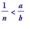 , while 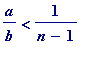 , for some natural number n , with );
then the numerator of the fraction
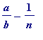
( =
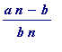
, which is, of course, positive)
is
smaller
than the numerator of the fraction
 (in other words,
a >
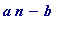
> 0)
(in other words,
a >
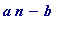
> 0)
Proof. (It's simply a matter of dividing
b
by
a
, and
choosing
the remainder to be
positive
and
less
than
a
.)
Let
b
=
aq
+
r
, with quotient
q
and remainder
r
, chosen so that 0 <
r
<
a
. (The '
n
' of the theorem is simply the 'ceiling' (in Maple 'ceil') of
, which, since
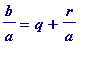
, will be
.) Then
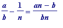 = 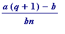
and the numerator
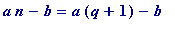
=
=
, the numerator of
 . [end of proof]
. [end of proof]
Note these 'ceil' commands:
> ceil(14/3);
> ceil(1/(3/14));
> ceil(1/(1/14));
>
We want a nice working procedure, and it is easy to make one if one just works up to it from an actual example.
If one started with (e.g.) 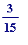 , it would already be a unit fraction ( ), and so we want to cover that kind of thing... , but if we started with (e.g.) 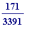 (which lies between 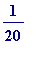 and 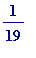 ) then we set:
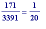
+ (a bit extra) =
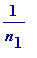
+

and define
 (which we will use in place of
(which we will use in place of
 ) and
by setting:
) and
by setting:
>
r[0] := 171/3391;
n[1] := ceil(1/r[0]);
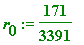
>
We now define , and from it, 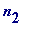 , the denominator of the second unit fraction:
>
r[1]:= r[0] - 1/n[1];
n[2]:= ceil(1/r[1]);
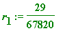
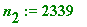
>
Thus far we then have
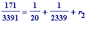
, and let's (unthinkingly) continue in the obvious manner:
-
define define
![r[2]](images/Egyptian101.gif) , and from it,
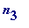
, the denominator of the third unit fraction
, and from it,
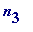
, the denominator of the third unit fraction
-
define
, and from it,
, the denominator of the fourth unit fraction
... until we find we've come to the end
>
r[2]:= r[1] - 1/n[2];
n[3]:= ceil(1/r[2]);
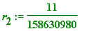
>
r[3]:= r[2] - 1/n[3];
n[4]:= ceil(1/r[3]);
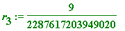
>
r[4]:= r[3] - 1/n[4];
n[5]:= ceil(1/r[4]);
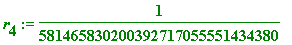
>
r[5]:= r[4] - 1/n[5];
n[6]:= ceil(1/r[5]);
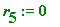
Error, division by zero
>
Thus, the above led to = 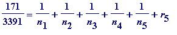 (with 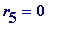 , and )
That, clearly, is the point at which we STOP, since is a unit fraction, and we see that we have is:
> 1/n[1] + 1/n[2] + 1/n[3] + 1/n[4] + 1/n[5];
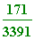
>
We now want Maple to
recognise
in a general setting that we have reached the stopping point... ; that's where the use of 'while' will come to our rescue. You've already seen that in other circumstances (gcd, binary, etc). It's clear that the
appropriate program lines
are these (with 'k' starting at 1):
r[k] := r[k-1] - 1/n[k];
n[k+1] := ceil(1/r[k]);
The above single case may be tidied up as follows (first note the use of Maple's (type, integer) command):
> type(8.75, integer);

> type(27/4, integer);

> type(28/4, integer);

>
r[0] := 171/3391;
n[1] := ceil(1/r[0]);
for k while type(1/r[k-1], integer) = false do
r[k] := r[k-1] - 1/n[k];
n[k+1] := ceil(1/r[k]);
od;
seq(1/n[m], m=1..k);

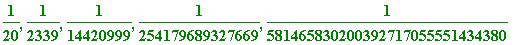
>
If we suppress the semi-colons we will just see the unit fractions:
>
r[0] := 171/3391:
n[1] := ceil(1/r[0]):
for k while type(1/r[k-1], integer) = false do
r[k]:= r[k-1] - 1/n[k]:
n[k+1]:= ceil(1/r[k]):
od:
seq(1/n[m], m=1..k);

>